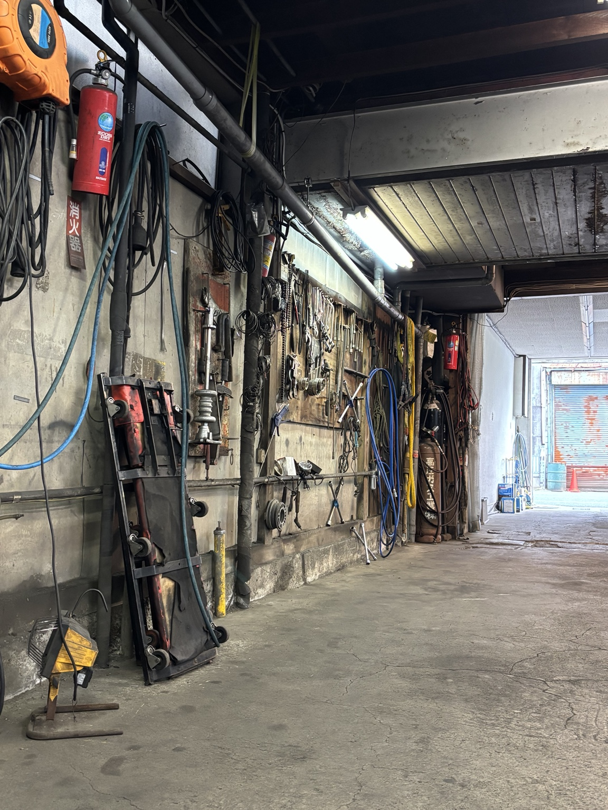
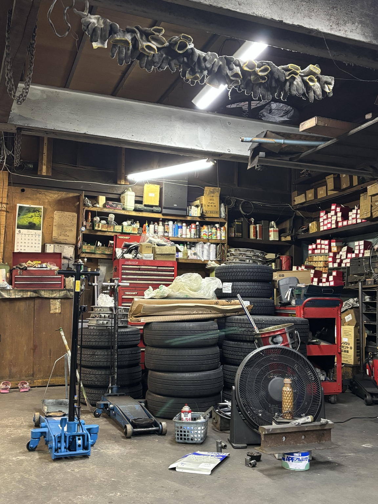

地域密着
盛岡市南大通で、地域の方々のカーライフを支えてきました。お車の身近な相談先としてお付き合いします。
ABOUT FUJITETSU MOTORS
盛岡市南大通で、地域に根ざした整備工場として長年営業してきました。
派手さよりも、一台一台に丁寧に向き合うことを大切にしています。お車の状態や必要な整備について、できるだけわかりやすくご説明し、安心してお任せいただける仕事を積み重ねてきました。
知り合いや地域の皆さまに長くご利用いただいている、町の整備工場です。気になることがありましたら、どうぞ気軽にお電話ください。
OUR STRENGTHS
長くお付き合いいただける身近な整備工場として、誠実な対応と確かな仕事を大切にしています。
盛岡市南大通で、地域の方々のカーライフを支えてきました。お車の身近な相談先としてお付き合いします。
一台一台の状態をよく見て、必要な整備を丁寧に行います。内容もわかりやすくご説明します。
長年培ってきた経験を活かし、日々の点検から修理、車検まで幅広く対応しています。
SERVICES
整備・修理から車両販売、保険まで。内容や費用について丁寧にご説明いたします。
安全を第一に、必要な整備を見極めて対応します。
定期的な点検で、お車の不調を早めに確認します。
異音や故障など、気になる症状をご相談ください。
お車に合ったオイルで、定期交換を行います。
季節に合わせたタイヤ交換を承ります。
点検から交換まで、状態に合わせて対応します。
キズやへこみなどの修理をご相談いただけます。
ご希望に合った新車選びをお手伝いします。
用途やご予算に合わせてご相談を承ります。
自動車保険についてもお気軽にご相談ください。
※ 内容によっては対応できない場合があります。まずはお電話にてご相談ください。
FIRST VISIT
初めての方でも、お電話でお気軽にご相談ください。
お車の状態を確認し、必要な整備内容をわかりやすくご説明します。
OUR WORKSHOP
使い込まれた工具や設備とともに、日々お客様の車と向き合っています。町工場ならではの距離の近さと、丁寧な仕事を大切にしています。


COMPANY
地域の皆さまに信頼していただける整備工場を目指し、これからも一つひとつの仕事を大切にしてまいります。
CONTACT
車検のご相談、気になる音や不調など、気軽にお問い合わせください。